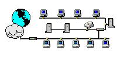

Zum vorhergehenden Abschnitt Zum vorhergehenden Abschnitt |
 Zum Inhaltsverzeichnis Zum Inhaltsverzeichnis |
 Zum nächsten Abschnitt Zum nächsten Abschnitt |
|  | Internet-TechnologieProf. Jürgen Plate |
Einige Perl-Funktionen verhalten sich anders als ihr äquivalen in C, obwohl sie dieselben Namen tragen. inet_aton ist nur ein Beispiel dafür. Ein anderes Beispiel ist accept(2), die in C einen Filedeskriptor oder -1 liefert, während in Perl eine spezielle Syntax für das neue Filehandle benutzt wird, und der Rückgabewert Information über den Kommunikationspartner enthält oder undef ist. (Diese Information wiederum kann man in C mit getpeername(2) erhalten.) sockaddr_in ist in C eine Struktur, in Perl eine Hilfsfunktion, die sowohl benutzt werden kann, um Daten aus dieser Struktur zu extrahieren, als auch um Daten in eine solche Struktur zu verfrachten.
($a,$b,$c,$d) = split(/\./, '192.168.34.3');
$packed_ip = pack('C4',$a,$b,$c,$d);
Das entpacken analog durch:
($a,$b,$c,$d) = unpack('C4',$packed_ip);
$dotted_quad = join ('.', $a,$b,$c,$d);
Das Packen und Entpacken muß aber nicht von Hand erfolgen, denn es gibt
passende Standardfunktionen dafür:
my $addr = inet_aton("127.0.0.1");
my $Wert = gethostbyaddr($addr, AF_INET);
print "$Wert\n";
oder auch:
my $addr = inet_aton("127.0.0.1");
($name,$aliases,$atype,$len,$addrs) = gethostbyaddr($addr, AF_INET);
print "Name: $name\n";
print "Aliases: $aliases\n";
print "Adresse: ".join (".",unpack("C4", $addrs)), "\n";
Gibt die zugehörige IP-Adresse binär numerisch zurück. Im Listenkontext erhält man Name, Aliase, Addresstype, Länge und die Adresse.
my $addr = gethostbyname("localhost");
my $Wert = inet_ntoa($addr);
oder auch:
my ($name,$aliases,$atype,$len,$addrs) = gethostbyname("menetekel");
print "Name: $name\n";
print "Aliases: $aliases\n";
print "Adresse: ".join (".",unpack("C4", $addrs)), "\n";
my $addr = inet_aton("127.0.0.0");
my $Wert = getnetbyaddr($addr, AF_INET);
Gibt die zugehörige IP-Adresse binär numerisch zurück.
my $addr = getnetbyname("loopback");
my $Wert = inet_ntoa($addr);
Gibt die zugehörige Protokollnummer zurück. Wenn der übergebene Protokollname nicht gefunden wurde, wird undef zurückgegeben. Im Listenkontext erhält man Name, Aliase und Protokollnummer:
my $number = getprotobyname("tcp");
print "$number\n";
my ($name,$aliases,$number) = getprotobyname("tcp");
print "Name: $name\n";
print "Aliases: $aliases\n";
print "$number\n";
Gibt den zugehörigen Protokollnamen zurück. Wenn die übergebene Protokollnummer nicht gefunden wurde, wird undef zurückgegeben. Im Listenkontext erhält man Name, Aliase und Protokollnummer:
my $number = getprotobynumber(17); print "$number\n"; my ($name,$aliases,$number) = getprotobynumber(17); print "Name: $name\n"; print "Aliases: $aliases\n"; print "$number\n";
Gibt im skalaren Kontext die zugehörige Benutzernummer (UID) und im Listenkontext eine Liste mit allen Daten des Eintrags zurück. Wenn der Benutzername nicht gefunden wurden, wird undef zurückgegeben.
print "\nUser-ID: ";
chop ($login = <STDIN>);
(@pw_info) = (getpwnam("$login"));
print "\nUserinformationen fuer login: $login\n\n";
print "Login: $pw_info[0]\n";
print "Pw (encoded): $pw_info[1]\n";
print "UserID: $pw_info[2]\n";
print "GroupID: $pw_info[3]\n";
print "Kommentar: $pw_info[6]\n";
print "HomeDir: $pw_info[7]\n";
print "Shell: $pw_info[8]\n";
print "\n\n";
Gibt im skalaren Kontext den zugehörigen Benutzernamen und im Listenkontext eine Liste mit allen Daten des Eintrags zurück. Wenn die Benutzernummer nicht gefunden wurden, wird undef zurückgegeben.
print "\nUser-ID: ";
chop ($login = <STDIN>);
(@pw_info) = (getpwuid("$login"));
print "\nUserinformationen fuer login: $login\n\n";
print "Login: $pw_info[0]\n";
print "Pw (encoded): $pw_info[1]\n";
print "UserID: $pw_info[2]\n";
print "GroupID: $pw_info[3]\n";
print "Kommentar: $pw_info[6]\n";
print "HomeDir: $pw_info[7]\n";
print "Shell: $pw_info[8]\n";
print "\n\n";
Gibt die zugehörige Portnummer zurück. Wenn der übergebene Netzwerkname oder das Protokoll nicht gefunden wurden, wird undef zurückgegeben. Im Listenkontext erhält man Name, Aliase, Port und Protokollnummer:
my $port = getservbyname("www","tcp");
print "$port\n";
my ($name,$aliases,$port,$number) = getservbyname("www","tcp");
print "Name: $name\n";
print "Aliases: $aliases\n";
print "Port: $port\n";
print "Proto: $number\n";
my $port = getservbyport(80,"tcp"); print "$port\n"; my ($name,$aliases,$port,$number) = getservbyport(80,"tcp"); print "Name: $name\n"; print "Aliases: $aliases\n"; print "Port: $port\n"; print "Proto: $number\n";
PeerAddr Adresse des entfernten Hosts <hostname>[:<port>] PeerHost Synonym für PeerAddr PeerPort Entfernter Port oder Dienst <service>[(<no>)] | <no> LocalAddr Lokal gebundene Hostadresse hostname[:port] LocalHost Synonym für LocalAddr LocalPort Lokal gebundener Host-Port <service>[(<no>)] | <no> Proto Name/Nummer des Protokolls "tcp" | "udp" | ... Type Socket-Typ SOCK_STREAM | SOCK_DGRAM | ... Listen Queue-Größe für Listen Reuse Setze SO_REUSEADDR vor Bindung. Timeout Timeout-Wert für verschiedene OperationenIst Listen angegeben, wird ein Listen-Socket erzeugt. Handelt es sich beim Socket-Typ, der aus dem Protokoll abgeleitet wird, hingegen um SOCK_STREAM, dann wird connect() aufgerufen.
$sock = IO::Socket::INET->new(PeerAddr => 'www.netzmafia.de',
PeerPort => 'http(80)',
Proto => 'tcp');
$sock = IO::Socket::INET->new(PeerAddr => 'localhost:smtp(25)');
$sock = IO::Socket::INET->new(Listen => 5,
LocalAddr => 'localhost',
LocalPort => 9000,
Proto => 'tcp');
$sock = IO::Socket::INET->new('127.0.0.1:25');
Seit der Version 1.18 ist bei allen IO::Socket-Objekten das Autoflushing
standardmäßig aktiviert. Bei früheren Releases ist das nicht der Fall.
$sock = IO::Socket::INET->new(Proto=>'tcp'); $dest_addr = sockaddr_in(...); # usw. $sock->connect($dest_addr);
#!/usr/bin/perl
# tcp-server-st.pl -- Ein Single-threaded-TCP-Server
use strict;
use IO::Socket;
use constant MYPORT => 2000;
my $sock = '';
my $client = 0;
$sock = new IO::Socket::INET(LocalPort => MYPORT,
Reuse => 1,
Listen => 5)
or die "can't create local socket: $@\n";
print "Accepting connections on Port ", MYPORT, "...\n";
while ($client = $sock->accept())
{
# Eine Verbindung ist eingetroffen.
print "Accepted connection from ",
$client->peerhost(), ":", $client->peerport(), "\n";
# Echo, das alles umdreht:
while (<$client>)
{
chomp;
print $client scalar(reverse($_)), "\n";
}
$client->close() if defined $client;
}
Solange der Server mit einem Client in Verbindung ist, kann er keine weiteren
Anfragen entgegennehmen. Sobald dann fünf Client-Anfragen in der Warteschlange
stehen werden weitere Anfragen abgewiesen.
Der Client dazu kann auch zum Testen weiterer Demonstrations-Server verwendet werden.
Hier ist die Parameterversorgung beim Erzeugen eines neuen Socket etwas anders. Die
Adresse des zu kontaktierenden Servers und die Portnummer werden über die
Kommandozeile eingegeben. Statt "Reuse" und "Listen" werden
beim Client das Protokoll (TCP) und ein Timeoutwert übergeben. Der Client bricht
somit nach 5 Sekunden ab, wenn keine Verbindung zustandekommt.
Der Client schickt alle Eingabezeilen zum Server. Falls zwischendurch Zeilen vom
Server angekommen sind, werden Sie entgegengenommen und auf der Standardausgabe
ausgegeben.
#!/usr/bin/perl
# tcp-client.pl -- Ein einfacher TCP-Client.
# Verwendung: $0 remote_host remote_port
use strict;
use IO::Socket;
use constant TIMEOUT => 5;
my $sock = '';
my $reply = '';
$sock = new IO::Socket::INET(PeerAddr => $ARGV[0],
PeerPort => $ARGV[1],
Proto => 'tcp', Timeout => TIMEOUT)
or die "can't connect to $ARGV[0]:$ARGV[1]: $@\n";
while (<STDIN>)
{
print $sock $_;
last unless defined($reply = <$sock>);
print ">> $reply";
}
$sock->close() if defined $sock;
Der Nachteil des Single-Thread-Servers besteht hauptsächlich darin,
daß keine neuen Clientanfragen entgegengenommen werden, solange der
Server noch mit einem anderen Partner kommuniziert. Das Problem löst
die folgende Erweiterung.
#!/usr/bin/perl
# tcp-server-mt.pl -- Ein Multithreaded-TCP-Server
use strict;
use IO::Socket;
use constant MYPORT => 2000;
my $sock = '';
my $client = '';
$sock = new IO::Socket::INET(LocalPort => MYPORT,
Reuse => 1,
Listen => 5)
or die "can't create local socket: $@\n";
# Zombies verhindern
$SIG{'CHLD'} = sub { wait(); $client ->close; };
print "Accepting connections on Port ", MYPORT, "...\n";
while ($client = $sock->accept())
{
# Verbindung ist aufgebaut
print "Accepted connection from ",
$client->peerhost(), ":", $client->peerport(), "\n";
# Erzeugen eines Kindprozesses und Uebergabe an $client.
if (fork() == 0) # Kindprozess
{
# Echo, das alles umdreht:
while (<$client>)
{
chomp;
print $client scalar(reverse($_)), "\n";
}
}
}
Kommuniziert der erste Eigenbau-Client mit einem Server, der mehrere Zeilen zurückliefert, geht anscheinend irgendetwas schief. Der folgende Versuch, mit einem FTP-Server zu kommunizieren geht beim Login noch gut, aber danach wird die Kommunikation asynchron. Die Ausgaben des help-Befehls kommen nur Zeile für Zeile und man muß nach jeder Zeile die Enter-Taste drücken. Danach werden vom FTP-Server die leeren Eingaben mit einer Fehlermeldung quittiert:
plate@atlas:~/server > perl tcp-st-client.pl localhost 21 user plate >> 331 Password required for plate. pass Tralala >> 230 User plate logged in. help >> 214-The following commands are recognized (* =>'s unimplemented). >> USER PORT STOR MSAM* RNTO NLST MKD CDUP >> PASS PASV APPE MRSQ* ABOR SITE XMKD XCUP >> ACCT* TYPE MLFL* MRCP* DELE SYST RMD STOU >> SMNT* STRU MAIL* ALLO CWD STAT XRMD SIZE >> REIN* MODE MSND* REST XCWD HELP PWD MDTM >> QUIT RETR MSOM* RNFR LIST NOOP XPWD >> 214 Direct comments to root@localhost. quit >> 500 '': command not understood. >> 500 '': command not understood. >> 500 '': command not understood. >> 500 '': command not understood.Der Client muß die Ausgaben vom Server getrennt von den eigenen Eingaben behandeln. Wenn mehrere Zeilen vom Server zurückkommen, müssen auch mehrere Zeilen lokal angezeigt werden. Es gibt nur ein Problem: Das Ende der gesamten Kommunikation kann erkannt werden, aber nicht das Ende einer momentanen Ausgabe. Daher trennen wir auch beim Client die Kommunikation in zwei Prozesse auf. Der Elternprozeß übernimmt ausschließlich das Senden der Eingaben zum Server. Der Kindprozeß sorgt für die Ausgabe der Zeilen, die vom Server kommen. Nun treten keine Asynchronitäten mehr auf.
#!/usr/bin/perl
# tcp-mtclient.pl -- Ein multithreaded interaktiver TCP-Client.
# Verwendung: $0 remote_host remote_port
use strict;
use IO::Socket;
my $sock = '';
use constant TIMEOUT => 5;
$sock = new IO::Socket::INET(PeerAddr => $ARGV[0],
PeerPort => $ARGV[1],
Proto => 'tcp', Timeout => TIMEOUT)
or die "can't connect to $ARGV[0]:$ARGV[1]: $@\n";
# An dieser Stelle teilen wir mit fork() in zwei Prozesse auf:
if (fork()) # == 0 --> Kind
{
# Der Kindprozess: Server -> Mensch
while (<$sock>) { print $_; }
$sock->close() if defined $sock;
die "server closed connection.\n";
}
else
{
# Der Elternprozess: Mensch -> Server
while (<STDIN>) { print $sock $_; }
$sock->close(); # fertig, aufhaengen!
wait();
}
Man kann den gleichen Effekt auch Resourcen-schonender erreichen, indem man
IO::Select verwendet. Der Client prüft nun bei allen in
$select eingetragenen Handles, ob Daten vorliegen und so kann
das Programm die Daten unabhängig voneinander bearbeiten.
#!/usr/bin/perl
# Ein single-threaded interaktiver TCP-Client.
# Benutzt nur einen Prozess, aber IO::Select.
# Verwendung: $0 remote_host remote_port
use IO::Socket;
use IO::Select;
use strict;
my ($socket, $select, $handle);
my @ready = ();
$sock = new IO::Socket::INET(PeerAddr => $ARGV[0]
PeerPort => $ARGV[1],
Proto => 'tcp',
Timeout => 5)
or die "can't connect to $ARGV[0]:$ARGV[1]: $@\n";
$select = IO::Select->new();
$select->add($sock);
$select->add(\*STDIN);
while (@ready = $select->can_read())
{
foreach $handle (@ready)
{
last unless defined($reply = <$handle>);
if ($handle == $sock) { print $reply; }
else { print $sock $reply; }
}
}
$sock->close(); # fertig, aufhaengen!
HTTP/1.0 404 Not Found Server: Tralala 1.0 Content-Type: text/html Connection: closegefolgt von einer Leerzeile. Anschließend wird auch noch die Fehlermeldung als Mini-Webdokument geschickt und danach die Verbindung beendet.
#!/usr/bin/perl
# Ein Mini-Webserver: Nur Fehlermeldung
use strict;
use IO::Socket;
use constant MYPORT => 8080;
my $sock = '';
my $client = '';
$sock = new IO::Socket::INET(LocalPort => MYPORT,
Reuse => 1,
Listen => 5)
or die "can't create local socket: $@\n";
print "Accepting connections on Port ", MYPORT, "...\n";
while ($client = $sock->accept())
{
# Verbindung ist aufgebaut
print "Accepted connection from ",
$client->peerhost(), ":", $client->peerport(), "\n";
# Erzeugen eines Kindprozesses und Uebergabe an $client.
if (fork() == 0) # Kindprozess
{
$client->autoflush;
my ($dummy);
# Gaaaaaanz einfacher Webserver
# Eingabe wird ignoriert, aber ausgegeben
do
{
chomp($dummy = <$client>);
print "$dummy\n";
}
while(length($dummy) > 1);
print $client "HTTP/1.0 404 Not Found\n";
print $client "Server: Tralala 1.0\n";
print $client "Content-Type: text/html\n";
print $client "Connection: close\n";
print $client "\n";
print $client "<html><head><title>404 Not Found</title></head>\n";
print $client "<body><h1>404 Not Found</h1>\n";
print $client "Ätschibätsch!\n";
print $client "</body></html>\n";
print "*** FERTIG ***\n";
$client ->close;
}
}
Leider hat dieser Webserver noch einen Nachteil. Nach jedem Connect von einem Client bleibt ein Zombie
zurück - denn der Elternprozeß hat vergessen, das Signal CHLD vom Kindprozeß anzunehmen.
Deshalb wird auch hier der schon aus dem letzten Kapitel bekannte Signalhandler eingebaut:
#!/usr/bin/perl
# Ein Mini-Webserver: Nur Fehlermeldung
use strict;
use IO::Socket;
use constant MYPORT => 8080;
my $sock = '';
my $client = '';
$sock = new IO::Socket::INET(LocalPort => MYPORT,
Reuse => 1,
Listen => 5)
or die "can't create local socket: $@\n";
$SIG{'CHLD'} = sub { wait(); }; # Zombies verhindern
print "Accepting connections on Port ", MYPORT, "...\n";
while ($client = $sock->accept())
{
# Verbindung ist aufgebaut
print "Accepted connection from ",
$client->peerhost(), ":", $client->peerport(), "\n";
# Erzeugen eines Kindprozesses und Uebergabe an $client.
if (fork() == 0) # Kindprozess
{
$sock->close; # not needed in child
$client->autoflush;
my ($dummy);
# Gaaaaaanz einfacher Webserver
# Eingabe wird ignoriert, aber ausgegeben
do
{
chomp($dummy = <$client>);
print "$dummy\n";
}
while(length($dummy) > 1);
print $client "HTTP/1.0 404 Not Found\n";
print $client "Server: Tralala 1.0\n";
print $client "Content-Type: text/html\n";
print $client "Connection: close\n";
print $client "\n";
print $client "<html><head><title>404 Not Found</title></head>\n";
print $client "<body><h1>404 Not Found</h1>\n";
print $client "Ätschibätsch!\n";
print $client "</body></html>\n";
print "*** FERTIG ***\n";
$client ->close;
}
$client ->close; # not needed in parent
}
Dieser Server läßt sich recht einfach so erweitern, daß die
vom Client gewünschte HTML-Datei geschickt wird. Dazu wird im Server
ein Startverzeichnis festgelegt, das für die Anfragen der Clients das
Wurzelverzeichnis bildet. Deshalb werden beim Auswerten der Anfrage auch URLs
der Form "../../.. usw. verhindert. Die Anfragezeile selbst hat
den Aufbau
GET dateiname HTTP/1.xDer Dateiname läßt sich recht einfach aus dieser Zeile herausziehen. Ist die angegebene Datei vorhanden, wird sie gesenden, andernfalls erfolgt die Fehlermeldung 404.
#!/usr/bin/perl
# Ein Mini-Webserver - Dateiausgabe, aber nur Text
use strict;
use IO::Socket;
# Port waehlen
use constant MYPORT => 8080;
# Startdirectory (Server-Root) festlegen
my $startdir = '/home/plate/server/';
my $sock = '';
my $client = '';
$sock = new IO::Socket::INET(LocalPort => MYPORT,
Reuse => 1,
Listen => 5)
or die "can't create local socket: $@\n";
$SIG{'CHLD'} = sub { wait(); }; # Zombies verhindern
print "Accepting connections on Port ", MYPORT, "...\n";
while ($client = $sock->accept())
{
# Verbindung ist aufgebaut
print "Accepted connection from ",
$client->peerhost(), ":", $client->peerport(), "\n";
# Erzeugen eines Kindprozesses und Uebergabe an $client.
if (fork() == 0) # Kindprozess
{
my ($input, $get, $file);
$sock->close; # not needed in child
$client->autoflush;
# Gaaaaaanz einfacher Webserver
# Eingabe wird untersucht und ausgegeben
do
{
chomp($input = <$client>);
print "$input\n";
$get = $input if ($input =~ /GET/);
}
while(length($input) > 1);
# Aus der GET-Zeile Dateinamen extrahieren
$get =~ /GET ([^ ]*) HTTP/;
$file= "$1";
$file = $file . 'index.html' if ($file =~ /\/$/);
$file =~ s/^\///g; # '/' am Anfang weg
$file =~ s/\.\.\///g; # URLS der Form '../../' unterbinden
$file = $startdir . $file; # Server-Root davor setzen
print "Senden $file\n";
# Datei oeffnen und zum Client schicken.
if (!open(DATEI,"$file"))
{
print $client "HTTP/1.0 404 Not Found\n";
print $client "Server: Tralala 1.0\n";
print $client "Content-Type: text/html\n";
print $client "Connection: close\n";
print $client "\n";
print $client "<html><head><title>404 Not Found</title></head>\n";
print $client "<body><h1>404 Not Found</h1>\n";
print $client "</body></html>\n";
print "*** FERTIG **\n";
$client ->close;
}
else
{
print $client "HTTP/1.0 200 OK\n";
print $client "Server: Tralala 1.0\n";
print $client "Content-Type: text/html\n";
print $client "Connection: close\n";
print $client "\n";
print $client $_ while(<DATEI>);
close(DATEI);
print "*** FERTIG **\n";
$client ->close;
}
}
$client ->close; # not needed in parent
}
Da dieser Server zeilenorientiert arbeitet, können keine Bilder oder
andere Multimedia-Inhalte gesendet werden. Dieser Mangel ist aber relativ
leicht zu beheben. Aber auch dann sind die beiden Webserver noch nicht für
eine Produktionsumgebung, sondern nur für Tests und Demonstrationen geeignet.
Außerdem wird davon ausgegangen, daß die Kindprozesse in der Reichenfolge beendet werden, in der sie kreiert wurden, da sonst der einfache Signalhandler nicht funktioniert und wieder Zombies entstehen. Man muß also eine Prozeßverwaltung einrichten, wie es schon im vorhergehenden Kapitel gezeigt wurde. Einen Server, der dies macht, finden Sie bei den Beispielen als webserver3.pl.
#!/usr/bin/perl
# Keks-Monster
use strict;
use IO::Socket;
use constant MYPORT => 2300;
my $sock = '';
my $client = '';
$sock = new IO::Socket::INET(LocalPort => MYPORT,
Reuse => 1,
Listen => 5)
or die "can't create local socket: $@\n";
$SIG{'CHLD'} = sub { wait(); }; # Zombies verhindern
print "Accepting connections on Port ", MYPORT, "...\n";
while ($client = $sock->accept())
{
# Verbindung ist aufgebaut
print "Accepted connection from ",
$client->peerhost(), ":", $client->peerport(), "\n";
# Erzeugen eines Kindprozesses und Uebergabe an $client.
if (fork() == 0) # Kindprozess
{
$sock->close; # not needed in child
# Das Monster in Aktion
print $client "Ich will KEKSE!\n";
while (<$client>)
{
chomp;
if ($_ =~ /KEKSE/)
{
print $client "\nMampf, Mampf....\n\n";
$client->close;
}
print $client "Ich will KEKSE!\n";
}
}
$client->close; # not needed in parent
}
Der folgende Server ist etwas anspruchsvoller. Er liefert, wie das UNIX-Programm fortune, einen mehr oder weniger coolen Spruch. Dazu wird das fortune-Programm in Perl nachempfunden. In der Datei /usr/share/fortune/fortunes stehen die meist mehrzeiligen Sprüche und sind jeweils durch eine Zeile getrennt, die nur ein %-Zeichen enthält. Deshalb wird beim Zugriff auf die Datei der Zeilentrenner mit $/ = "\n%\n" umdefiniert. So kann ein mehrzeiliger Text in eine skalare Stringvariable eingelesen und auf einmal an den Client gesendet werden. Nach der Ausgabe des Cookies wird die Verbindung sofort beendet.
#!/usr/bin/perl
# Fortune-Server
use strict;
use IO::Socket;
use constant MYPORT => 2000;
my $sock = '';
my $client = '';
$sock = new IO::Socket::INET(LocalPort => MYPORT,
Reuse => 1,
Listen => 5)
or die "can't create local socket: $@\n";
$SIG{'CHLD'} = sub { wait(); }; # Zombies verhindern
print "Accepting connections on Port ", MYPORT, "...\n";
while ($client = $sock->accept())
{
# Verbindung ist aufgebaut
print "Accepted connection from ",
$client->peerhost(), ":", $client->peerport(), "\n";
# Erzeugen eines Kindprozesses und Uebergabe an $client.
if (fork() == 0) # Kindprozess
{
$sock->close; # not needed in child
# Jetzt kommt der Spruch
$/ = "\n%\n";
my ($data,$cookie);
$data = '/usr/share/fortune/fortunes';
srand($$);
open(KEKS,"$data") || die "Keine Kekse\n";
rand($.) < 1 && ($cookie = $_) while <KEKS>;
$cookie =~ s/%$//;
print $client "\n$cookie\n";
close(KEKS);
$client->close;
}
$client->close; # not needed in parent
}
RFC 867 behandelt die Spezifikation des Protokolls "daytime", das sowohl über TCP/IP als auch über UDP auf dem Port 13 abgewickelt wird. Für die Syntax des zurückgegebenen Daytime-Strings gibt es keine allgemeinen Regeln, dieser String ist von Server zu Server unterschiedlich und kann beispielsweise das Format
Tag Monat Jahr Stunde:Minute:Sekundebesitzen. Außer dem Service "daytime" gibt es noch einen Dienst "time" welcher ebenfalls über TCP/IP im Internet von einigen Servern zur Verfügung gestellt wird. Hier wird die genaue Zeit im Binärformat auf Port 37 zurückgegeben.
Das folgende Perl-Script liefert die Systemzeit des lokalen Rechners im Klartext.
#!/usr/bin/perl
# Ein einfacher Daytime-Server
use IO::Socket;
my $serversock = new IO::Socket::INET (
LocalPort => 13,
Listen => $SOMAXCONN,
Proto => 'tcp',
Reuse => 1) || die "$!\n";
# In der Schleife auf eingehende Verbindungen warten...
print "Accepting connections on Port 13...\n";
while (my $clientsock = $serversock->accept() )
{
my $cur_time = localtime(time);
print $clientsock "$cur_time\n";
$clientsock->close() if defined $clientsock;
}
Das war nicht weiter interessant, denn es handelt sich nur um eine leichte Modifikation
des allerersten Servers. Interessanter wird es dagegen, wenn die Uhrzeit nicht vom lokalen
Server geholt wird, sondern von einem Server, der die Zeit einer Atomuhr bezieht (oder von
einem Server, der seinerseits auf die Atomzeit zugreift). Solche "Timeserver" liefern die
Uhrzeit jedoch im Binärformat - und auch nicht zur Basis des 1.1.1970 0 Uhr GMT (die
UNIX-Epoche), sondern zur Basis 1.1.1900 0 Uhr GMT. Damit stellt dies Programm nicht mehr einen einfachen Server dar, sondern hat Proxy-Funktion. Es wird nicht nur die Anfrage an einen anderen Rechner weitergereicht, sondern auch zwei verschiedene (wenn auch sehr einfache) Protokolle implementiert. Da es sich trotz aller Einfacheit um höhere Protokolle handelt, wird hiermit auch das Prinzip eines Gateways demonstriert.
#!/usr/bin/perl
# Script baut eine Verbindung zum ausgewaehlten "Zeitserver" auf
# und liefert dann die genaue Uhrzeit an den Client
use IO::Socket;
use strict;
# Clientport und Serverport
use constant CLPORT => 13;
use constant SVPORT => 37;
# Differenz zwischen 1.1.1900 (Time-Server)
# und 1.1.1970 (UNIX-Epoche)
use constant KORR => 2208988800;
# Mein Zeitserver
my $hostname = "ptbtime1.ptb.de"; # Timeserver der Physikalisch-Technischen
# oder ptbtime2.ptb.de # Bundesanstalt in Braunschweig
my $serversock = new IO::Socket::INET (
LocalPort => CLPORT,
Listen => 5,
Proto => 'tcp',
Reuse => 1)
or die "can't create local socket: $@\n";
# In der Schleife auf eingehende Verbindungen warten...
print "Accepting connections on Port ", CLPORT, "...\n";
while (my $clientsock = $serversock->accept() )
{
my $cur_time = &get_time;
print $clientsock "$cur_time\n";
$clientsock->close() if defined $clientsock;
}
# Zeit vom anderen Server holen
sub get_time
{
my ($binarytime, $servertime);
my $ts_sock = new IO::Socket::INET (
PeerAddr => $hostname,
PeerPort => SVPORT,
Proto => 'tcp')
or die "can't create local socket: $@\n";
read($ts_sock,$binarytime,4);
$ts_sock->close();
$servertime = unpack('N',$binarytime);
$servertime = localtime($servertime - KORR);
return "$servertime";
}
for (1..ANZ_PREFORK)
{
$child = fork();
next if ($child != 0); # Elternprozess macht nix
do_child($child); # Ablauf Kindprozess
exit(0); # Ende Kindprozess
}
sub do_child
{
my $socket = shift;
my $connection_count = 0;
while ($ch = $socket->accept())
{
handle_connection($ch);
$ch->close();
}
}
Eine reale Implemetierung erfordert jedoch noch die Beachtung (und
programmtechnische Realisierung) vieler Details und gestaltet sich relativ komplex.
#!/usr/bin/perl
$|=1;
use strict;
my ($pid, $i);
$pid = fork();
die "cannot fork: $!\n" if ($pid == -1);
# Parent beendet sich
if ($pid > 0)
{
print "Parent exits\n";
exit(0);
}
# Kindprozess wird von init adoptiert
chdir "/tmp" or die "could not chdir to /tmp: $!\n";
for($i = 0; $i < 100; $i++)
{
print "This is the Daemon.\n";
sleep(5);
}
Der wesentliche Punkt ist, daß der Parent terminiert, so daß der
Kindprozeß von Init adoptiert wird und im Hintergrund weiterläuft.
Der chdir-Aufruf setzt das aktuelle Verzeichnis in diesem Fall
auf das /tmp-Verzeichnis. Wenn man bei obigem Beispiel
die Shell beendet, in welche die Dämon-Ausgaben laufen, läuft der Dämon
im Hintergrund weiter; die print-Aufrufe würden dann Fehler liefern.
Im Beispiel stört das nicht, korrekterweise müßte man die drei
Standard-Dateihandles (stdin, stdout, stderr) im Kindprozeß
schließen.
Das folgende Unterprogramm erledigt einige weitere Aufgaben und eignet sich daher schon besser für den Praxiseinsatz. Die POSIX-kompatible Funktion setsid() kreiert jeweils neue neue Session- und Prozeß-Gruppe und macht den aktuellen Prozeß zum Session-Leader (wird an dieser Stelle nicht vertieft). Gleichzeitig wird der Prozeß komplett vom steuernden Terminal getrennt. Amschließend werden die Standarddateien wieder geöffnet, aber dabei auf /dev/null umgeleitet. So werden eventuelle Schreib- und Leseversuche von Subprozessen vernichtet. Man kann sie aber auch mittels close(\*STDIN); close(\*STDOUT); close(\*STDERR); komplett schließen.
use POSIX 'setsid';
sub become_daemon # ()
{
my $child = fork();
unless (defined($child)) die "Cannot fork!\n";
exit(0) if ($child > 0); # Eltenprozess beendet sich
make_pidfile(PIDFILE,$$); # Pid-Datei anlegen (s. u.)
setsid(); # Abtrennen
open(STDIN, "</dev/null"); # Standarddateien umlenken
open(STDOUT, ">/dev/null");
open(STDERR, ">&STDOUT");
chdir('/'); # Arbeitsverzeichnis /
umask(0); # UMASK definieren
# Pfad definiert setzen:
$ENV{PATH} = '/bin; /sbin; /usr/bin; /usr/sbin;';
return $$;
}
Die zweite hier vorzustellende Funktion legt eine Datei mit der Prozeß-ID
des Dämons an, damit er leicht leicht mit dem Kommando
kill -TERM `cat /var/run/server.pid`beendet werden kann. Der Dämon sollte dann die Datei server.pid auf jeden Fall noch löschen, bevor er sich beendet. Die Funktion trifft gegebenfalls auf eine noch vorhandene pid-Datei. Dann läuft entweder noch ein Serverprozeß oder ein früherer Serverprozeß ist abgestürzt, ohne die Datei zu löschen. Durch den Aufruf "kill 0 prozessnummer" kann festgestellt werden, ob es noch einen laufenden Prozeß mit dieser Nummer gibt und damit arbeitet die Funktion recht intelligent:
sub make_pidfile # (dateiname, newpid)
{
my $filename = shift;
my $newpid = shift;
if (-e $filename) # Datei schon vorhanden
{
open PID "<$filename";
my $pid = <PID>;
close PID;
# gibt's den Server noch?
die "Server already running ($pid)\n" if kill 0 => $pid;
# Hier ggf. noch nachsehen, ob der Prozess auch ein alter
# Serverprozess ist und nicht zufaellig ein anderer Prozess
# diese Prozessnummer besitzt
# Nun die alte Datei platt machen
unlink $filename || die "Cannot delete $filename\n";
}
# Neue Datei anlegen und Zugriffsrechte setzen
open PID ">$filename";
print PID $newpid;
close PID;
chmod(644 $filename);
}
Im Hauptprogramm sind dann nur noch einige Aufrufe und Festlegungen
nötig:
# Namen der PID-Datei festlegen
use constant PIDFILE => '/var/run/myserver.pid';
# Exit-Handler setzen
$SIG{TERM} = $SIG{INT} = sub { exit 0; }
# Daemon werden
my $daemonpid = become_daemon();
# Sicherstellen, dass beim Exit die PID-Datei
# auf jeden Fall geloescht wird
# (Der Elternprozess muss die Datei aber in Ruhe lassen)
END { unlink(PIDFILE) if ($daemonpid == $$); }
Analog lassen sich auch die Gruppenrechte verändern. Ist der Benutzer in mehreren Gruppen vertreten, enthalten die Variablen $) und $( eine Liste der Gruppen-IDs, jeweils durch Leerzeichen getrennt. Für den Wechsel der "primary group" wird ein einziger Wert an die Variable $( zugewiesen. Um die effektive Gruppen-ID zu wechseln, wird ein einziger Wert in $) gespeichert. Wird eine Liste von (durch Leerzeichen getrennten) Gruppen-IDs an $) zugewiesen, wird die erste Zahl zur effektiven Gruppen-ID und die folgenden zu den "supplementary groups". Besteht die Liste aus nur zweimal demselben Wert, hat der Prozeß nur noch eine einzige Gruppen-ID.
| Wert | Name | Beschreibung |
| 1 | LOCK_SH | Shared Lock |
| 2 | LOCK_EX | Exclusive Lock |
| 4 | LOCK_NB | Non-Blocking Lock |
| 8 | LOCK_UN | Unlock (Freigabe) |
Netterweise erlaubt uns Perl auch die Umleitung der Standardfunktionen die und warn, sie lassen sich also im Programm weiterhin verwenden, nur daß jetzt der Output im Logfile landet. Das ist besonders dann interessant, wenn man nachträglich Logging hinzufügt.
Für das Logging sind nur wenige Unterprogramme nötig:
use strict;
sub start_log #(Dateiname)
{
my $filename = shift;
open(FH,">>".$filename) || return 0;
chmod($filename,644);
# Autoflush setzen fuer FH
my $oldfh = select(FH); $| = 1; select($oldfh);
# Lock freigeben
flock(FH,8);
# warn und die umleiten
$SIG{__WARN__} = \&log_warn;
$SIG{__DIE__} = \&log_die;
return 1;
}
sub end_log
{
close(FH);
}
sub log_info #(Message)
{
my $time = localtime;
my $mesg = join(' ',@_) || "Oops!";
$mesg = $time . " [INFO] " . $mesg . "\n";
flock(FH,2);
print FH $mesg;
flock(FH,8);
}
sub log_warn #(Message)
{
my $time = localtime;
my $mesg = join(' ',@_) || "Oops!";
$mesg = $time . " [ERROR] " . $mesg . "\n";
flock(FH,2);
print FH $mesg;
flock(FH,8);
}
sub log_die #(Message)
{
my $time = localtime;
my $mesg = join(' ',@_) || "Oops!";
$mesg = $time . " [FATAL] " . $mesg . "\n";
flock(FH,2);
print FH $mesg;
flock(FH,8);
close(FH);
die @_;
}
#!/usr/bin/perl
use strict;
# Signalhandler setzen
$SIG{"ALRM"} = sub { print "Timeout - terminated!\n"; exit(1); };
# Timeout nach 10 Sekunden
alarm(10);
# Damit was passiert
my $count = 0;
while (1)
{
$count++;
print "Rumpelstilzchen $count!\n";
sleep(1);
}
#!/usr/bin/perl
# Ein einfacher TCP-Client zum Abspielen von mp3-Dateien
# Verwendung: $0 URL
use strict;
use IO::Socket;
use constant TIMEOUT => 5;
my $SOCK = '';
my $reply = '';
my $content = '';
my $header = '';
my $handler = '/usr/bin/audioplay'; # Abspielprogramm
my $url = shift @ARGV; # URL zerlegen
$url=~m/http\:\/\/([^\:^\/]*)(?:\:(\d+))?\/(.*)/;
my $host = $1;
my $port = $2;
$port = 80 unless($port);
my $file = '/'.$3;
$SOCK = new IO::Socket::INET(PeerAddr => $ARGV[0],
PeerPort => $ARGV[1],
Proto => 'tcp', Timeout => TIMEOUT)
or die "can't connect to $ARGV[0]:$ARGV[1]: $@\n";
my $old_fh = select(SOCK); # Ungepufferte Ausgabe
$|=1; # fuer SOCK einstellen
select($old_fh);
print "Requesting $file..\n";
print SOCK "GET $file HTTP/1.0\n";
print SOCK "Accept: */*\n";
print SOCK "User-Agent: webamp 007\n\n";
print "Waiting for reply..\n";
$header = <SOCK>;
exit unless($header=~m/200|OK/); # Ende bei Fehlermeldung
while($header = <SOCK>) # Header ueberlesen
{
chomp;
last unless(m/\S/);
}
open(HANDLER, "|$handler") or die "Cannot pipe input to $handler: $!\n";
print "Redirecting HTTP filestream to $handler..\n";
while(read(SOCK, $content, 512))
{
print HANDLER $content; # Perl-Strings sind
} # "binaerfest"
$sock->close() if defined $sock;
#!/usr/bin/perl -w
use IO::Socket;
use strict;
my $pinghost = '';
$|=1;
foreach $pinghost (@ARGV)
{
&port_scan($pinghost, 1, 1024);
}
exit;
sub port_scan # ($hostip, $lowport, $highport)
{
my $port = 0;
my $iaddr = 0;
my $paddr = 0;
my $connect_time = 1;
my $protocol_name = "tcp";
my $protocol_id = getprotobyname($protocol_name);
my $hostip = shift;
my $lowport = shift;
my $highport = shift;
print "Portscan von $hostip.\n";
for ($port = $lowport; $port <= $highport; $port++)
{
$SIG{"ALRM"} = sub { close(SOCKET); };
alarm $connect_time;
socket(SOCKET, PF_INET, SOCK_STREAM, $protocol_id);
$iaddr = inet_aton($hostip);
$paddr = sockaddr_in($port, $iaddr);
print " Port $port offen.\n" if (connect(SOCKET, $paddr));
close(SOCKET);
}
}
#!/usr/bin/perl -w
use Net::FTP;
use strict;
my $host = 'ftp.netzmafia.de';
my $ftp = Net::FTP->new ($host,
Timeout => 360,
Port => 21,
Debug => 1,
Hash => 0
);
unless (defined $ftp)
{
print "$@\n";
die "Can't create Net::FTP-Object\n";
}
Erzeugen eines neuen FTP Objekts, das mit der Addresse des FTP Servers initialisiert
wird. Gleichzeitig wird die Verbindung mit dem FTP Server hergestellt. Dieses
"Verbindungsobjekt" wird nun über seinen Namen ($ftp) angesprochen.
NNun kann es nun mittels passender Methoden manipuliert bzw. verwendet werden werden.
Genau dies geschieht in den folgenden Skriptzeilen:$user = 'plate'; $password = 'geheim'; $ftp->login($user,$password) || die "Can't login $!";oder unter Verwendung von .netrc:
$ftp->login(); # Sucht einen passenden Eintrag in .netrc für HOST aus new()Anonymer Login:
$ftp->login('anonym','webhamster@netzmafia.de');
$return_code = $ftp->site("chmod 755 $file");
Das erste Digit hat gemäss RFC 959 folgende Bedeutung
Mögliche Fehlerbehandlung:
print "Kommando O.K. - Datentransfer\n" if ($return_code == 1); print "Kommando erfolgreich\n" if ($return_code == 2); print "Kommando O.K. - Weiter!\n" if ($return_code == 3); print "Temporaerer Fehler\n" if ($return_code == 4); print "Fehler \n" if ($return_code == 5);
ascii => A binary => I ebcdic => E byte => LBeispiel:
# ascii-transfer
$ftp->type("A");
# binaer-transfer
$ftp->type("I");
ebcdic und byte werden nicht vollständig unterstützt.
$old_name = 'test.txt'; $new_name = 'Protokoll.txt'; $ftp->rename($old_name,$new_name) || die "Can't rename\n";
$ftp->delete($file) || die "Can't unlink remote $file $!";
$dir = '/pub/perl/CPAN/'; $ftp->cwd($dir) || die "Can't change working directory $dir $!";
$ftp->cdup();
print "Aktuelles Verzeichnis: ", $ftp->pwd() , "\n";
$dir = 'temp_files'; $OK = $ftp->rmdir($dir,0);
$dir = '/pub/foo'; $path = $ftp->mkdir($dir) || die "Can't create remote $dir $!"; print "$path\n";Falls RECURSE auf "wahr" gesetzt wird, werden alle angegebenen Verzeichnisse rekursiv angelegt, zum Beispiel:
$dir = '/pub/perl/new-files'; $ftp->mkdir($dir,1) || die "Can't create remote $dir recursively $!";erzeugt die Verzeichnisse /pub und /pub/perl und /pub/perl/new-files.
@files = $ftp->ls();
foreach $file (@files)
{
print "$file\n";
}
Beispiel für skalalen Kontext:
$array_ref = $ftp->ls();
foreach $file (@$array_ref)
{
print "$file\n";
}
Die meisten FTP-Server verwenden das Unix-Kommando ls oder etwas
dazu analoges.
@files = $ftp->ls();
foreach $file (@files)
{
$ftp->get($file);
}
Hinweis: Falls die Datei(en) im ASCII-Modus übertragen wurden, können
sich die Grössenangaben bzw. Startpunkte auf dem lokalen Server und dem FTP-Server
unterscheiden (Unterschiede bei der Darstellung des Zeilenendes).
$file = '/home/plate/foo.bar'; $remote_file_name = $ftp->put($file) || die "Can't put $file $!"; print "$remote_file_name\n"; # ergibt foo.bar
$OK = $ftp->supported('STOU');
$OK ? print "STOU supported\n" : "STOU is not supported\n";
$OK = $ftp->abort();
$ftp->quit();
#!/bin/perl
use Net::FTP;
use strict;
my $host = 'localhost';
my $user = 'plate';
my $password = 'geheim';
my $file = '';
my $array_ref = '';
# Neues Net::FTP-Objekt
my $ftp = Net::FTP->new($host,
Timeout => 360,
Debug => 1
);
unless (defined $ftp)
{
print "$@\n";
die "Can't create Net::FTP-Object\n";
}
$ftp->login($user,$password) || die "Can't login $!";
print "Aktuelles Verzeichnis: ", $ftp->pwd() , "\n";
$array_ref = $ftp->ls();
foreach $file (@$array_ref)
{
# Transfermodus in Abhängigkeit von der Dateiendung setzen
if ($file =~ /(\.gif|\.jpg|\.tar|\.tar\.gz|\.tgz|\.zip)$/)
{ $ftp->type(I); }
else { $ftp->type(A); }
$ftp->get($file);
}
$ftp->quit();
if ( $p->ping($host) )
{ print "$host is reachable\n"; }
else { print "$host is unreachable\n"; }
$p->close();
sub pinger # (Host)
{
# Parameter: Host-IP-Nummer
my $host = shift; # zu pingender Host
my $retval = 0; # Ergebnis: 0 nicht erreicht, 1 erreicht, 2 Fehler
# Neues Net-Ping Objekt
my $p = Net::Ping->new('icmp');
unless (defined $p)
{ die "*** can't create Net::Ping object $!";}
# Exceptions auffangen
eval
{
$retval = 1 if ($p->ping($host));
if ($@)
{
print "*** Ping failed\n*** $@\n";
$retval = 2;
}
$p->close;
undef ($p);
sleep(1); # avoid network flooding
return $retval;
}
}
Das Unterprogramm kann verwendet werden, um alle Rechner eines C-Netzes
auf Erreichbarkeit zu testen:
#!/usr/bin/perl -w
use Net::Ping;
use strict;
my $network = '192.168.33';
print "Scanning Network $network.0 \n";
for ($count = 1; $count <= 254; $count++)
{
$pinghost = $network . "." . $count;
$ret = &pinger($pinghost);
if ($ret == 1)
{ print "$pinghost reached\n"; }
}
exit;
Das folgende Beispiel testet die Erreichbarkeit eines Rechners mit
den drei zur Verfügung stehenden Protokollen.
#!/usr/bin/perl -w
use Net::Ping; # Standardmodul
use strict;
my $host = '127.0.0.1';
# Protokoll TCP
my $p = Net::Ping->new('tcp');
unless (defined $p) { die "can't create Net::Ping object $!";}
if ($p->ping($host)) { print "$host reachable via TCP\n" ; }
else { print "$host unreachable via TCP\n"; }
$p->close;
# avoid network flooding
sleep(1);
# Protokoll UDP
$p = Net::Ping->new(); # UDP ist Voreinstellung
unless (defined $p) { die "can't create Net::Ping object $!";}
# Exceptions auffangen
eval
{
if ($p->ping($host)) { print "$host reachable via UDP\n"; }
else { print "$host unreachable via UDP\n"; }
};
if ($@) { print "$@: UDP failed\n"; }
undef $p;
# avoid network flooding
sleep(1);
if ($> == 0)
{
# Falls das Skript als 'root' (UID 0) läuft
# Protokoll 'icmp' verwenden
$p = Net::Ping->new('icmp');
unless (defined $p) { die "can't create Net::Ping object $!";}
if ($p->ping($host)) { print "$host reachable via icmp\n"; }
else { print "$host unreachable via icmp\n"; }
undef $p;
}
exit;
# UserAgent
use LWP::UserAgent;
$ua = LWP::UserAgent->new();
# URI
$url = 'http://www.netzmafia.de/';
# Request
$Anfrage = HTTP::Request->new('GET', $url);
# Response
$Antwort = $ua->request($Anfrage);
Zur Erfolgskontrolle bzw. Fehlerbehandlung stehen die beiden Methoden
is_success() bzw. is_error() zur Verfügung, zum
Beispiel:
unless ($Antwort->is_success() )
{
print "Fehlernummer : ", $Antwort->code() , "\n";
print "Fehlermeldung: ", $Antwort->message(), "\n";
}
use LWP::Simple; $url = "http://www.netzmafia.de/index.html"; # Header ermitteln ($content_type, $document_length, $modified_time, $expires, $server) = head($url); # Ergebnisse ausgeben print "Content-type: ", $content_type, "\n"; print "Document-Length: ", $document_length, "\n"; print "Modified-Time: ", $modified_time, "\n"; print "Expires: ", $expires, "\n"; print "Server: ", $server, "\n";Falls man nur wissen will, ob die URI noch existiert:
$exists = head($url);
if ($exists) { print "URI existiert\n"; }
else { print "\a\a\aKein Anschluss unter dieser URI.\n"; }
use LWP::Simple;
$url = 'http://www.netzmafia.de/index.html'
$dokument = get($url);
unless (defined $dokument) { print "ERROR\n"; exit };
use LWP::Simple; $url = 'http://www.netzmafia.de/index.html' getprint($url);
use LWP::Simple; $url = 'http://www.netzmafia.de/index.html' $localfile = '/home/plate/tmp/index.html'; getstore($url, $localfile);
#!/usr/bin/perl -w
use LWP::UserAgent;
use strict;
my ($url, $ua, $request, $response);
$url = "http://www.netzmafia.de/index.html";
# User Agent
$ua = LWP::UserAgent->new();
# Anfrage mit Methode HEAD
$request = HTTP::Request->new('HEAD', $url);
# Antwort holen
$response = $ua->request($request);
if ($response->is_success())
{
# Header als ASCII-Text ausgeben
print $response->headers_as_string() , "\n"
}
else
{
# Fehlermeldung ausgeben
print $response->message() , "\n";
}
Falls man nur an bestimmten Feldern interessiert ist, kann man die
Methode header(), etwa zum Bestimmen der Grösse der Datei,
verwenden:
...
$size = $response->header('Content-Length');
print "URL: $url Grösse: $size Bytes\n";
...
Den HTTP-Status-Antwort-Header erhält man mit:
#!/usr/bin/perl -w
use LWP::UserAgent;
use strict;
my ($url, $ua, $request, $response);
$url = "http://192.168.33.2/index.html";
# User Agent
$ua = LWP::UserAgent->new();
$request = HTTP::Request->new('HEAD', $url);
$response = $ua->request($request);
print "HTTP-Status-Antwort-Header: ", $response->code , "\n";
Beispiel: Hat sich die URL seit gestern geändert?
Der Request benötigt die Zeit in Unix-Sekunden, daher ein paar Umrechnungsfaktoren:
use HTTP::Status;
use HTTP::Date;
use LWP::UserAgent;
use strict;
my ($url, $ua, $request, $response);
$url = 'http://192.168.33.2/';
$request = HTTP::Request->new(HEAD, $url );
# Tag => 86400 s
# Woche (7 Tage) => 604800 s
# Monat (30.5 Tage) => 2635200 s
# Jahr (365 Tage) => 31536000 s
# Aktuelle Zeit in UnixSekunden - 1 Tag = gestern
$mtime = time - 86400;
# Request-Header setzen
$request->header('If-Modified-Since' => time2str($mtime));
# User Agent
$ua = LWP::UserAgent->new();
$response = $ua->request($req);
# 304 --> Keine Aenderung seit der angefragten Zeitspanne
if ( $response->code() == RC_NOT_MODIFIED)
{ print "$url wurde seit time2str($mtime) nicht geändert\n"; }
else { print "\aWake up. $url changed\n"; }
Die Methode response() von LWP::UserAgent bietet einen komfortablen Zugriff auf Dokumente. Neben der verbesserten Möglichkeit zur Erfolgskontrolle stehen drei Varianten zur Verfügung.
use LWP::UserAgent;
$ua = LWP::UserAgent->new();
$url = 'http://www.netzmafia.de/'
$request = HTTP::Request->new('GET', $url);
$response = $ua->request($request);
if ( $response->is_error() )
{
print "Fehlernummer : ", $response->code() , "\n";
print "Fehlermeldung: ", $response->message() , "\n";
}
else
{
print $response->content() , "\n";
}
use LWP::UserAgent;
$file = 'local.html';
$ua = LWP::UserAgent->new();
$url = 'http://www.netzmafia.de/'
$request = HTTP::Request->new('GET', $url);
$response = $ua->request($request, $file);
if ( $response->is_error() )
{
print "Fehlernummer : ", $response->code() , "\n";
print "Fehlermeldung: ", $response->message() , "\n";
}
else
{
print $response->content() , "\n";
}
use LWP::UserAgent;
$file = 'local.html';
$ua = LWP::UserAgent->new();
$url = 'http://www.netzmafia.de/'
$request = HTTP::Request->new('GET', $url);
$Chunk_Size = 5 * 1024; # Wie gross soll der Happen sein
$response = $ua->request($request, \&Bearbeite, $Chunk_Size);
sub Bearbeite
{
$Bereits_erhaltene_Daten = shift;
...
++$x;
print "Happen Nummer $x\n\n";
print "$Bereits_erhaltene_Daten\n";
...
}
Diese Vorgehensweise ist beispielsweise sinnvoll bei
use LWP::UserAgent;
$ua = LWP::UserAgent->new();
$url = http://www.netzmafia.de/cgi-bin/info.cgi?Category=Soft&Language=Perl
$request = HTTP::Request->new('GET', $url);
$response = $ua->request($request);
if ( $response->is_error() )
{
print "Fehlernummer : ", $response->code() , "\n";
print "Fehlermeldung: ", $response->message() , "\n";
}
else
{
print $response->content() , "\n";
}
Falls die Daten des Query-Strings Leerzeichen, Sonderzeichen oder ähnliche kritische Zeichen enthalten, müssen diese entsprechend kodiert werden. Das Modul URI::Escape stellt die dafür notwendigen Methoden zur Verfügung:
use URI::Escape; $querystring = 'Name=Jürgen Plate&Strasse=Gänsemarkt 5'; $safe_querystring = uri_escape($querystring); print $safe_querystring , "\n";Liefert Name=J%FCrgen%20Plate&Strasse=G%E4nsemarkt%205. Nun lässt sich der Request vollständig angeben:
$querystring = 'Name=Jürgen Plate&Strasse=Gänsemarkt 5';
$safe_querystring = uri_escape($querystring);
$url = 'http://www.netzmafia.de/cgi-bin/info.cgi?';
$url .= "$safe_querystring";
...
$request = HTTP::Request->new('GET', $url);
...
| Zum vorhergehenden Abschnitt |
Zum Inhaltsverzeichnis |
Zum nächsten Abschnitt |